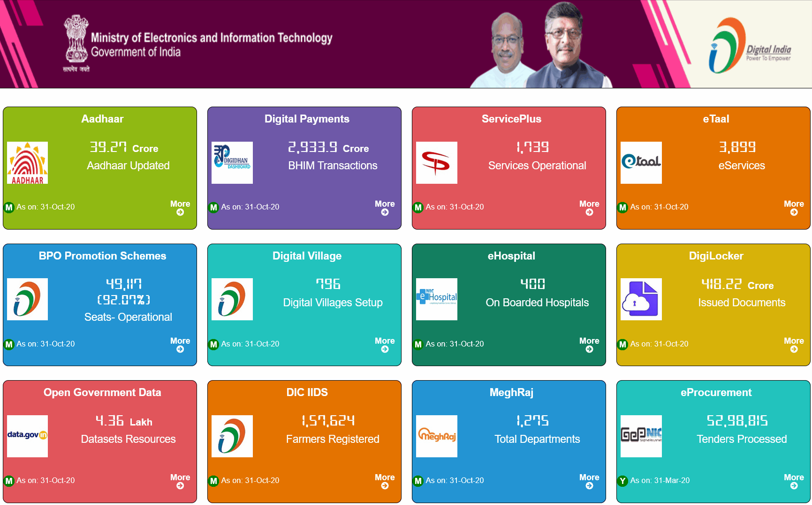
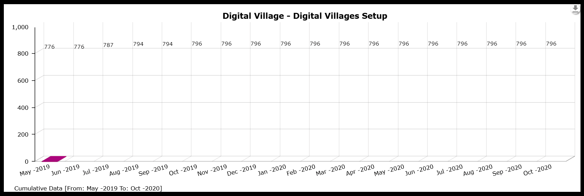
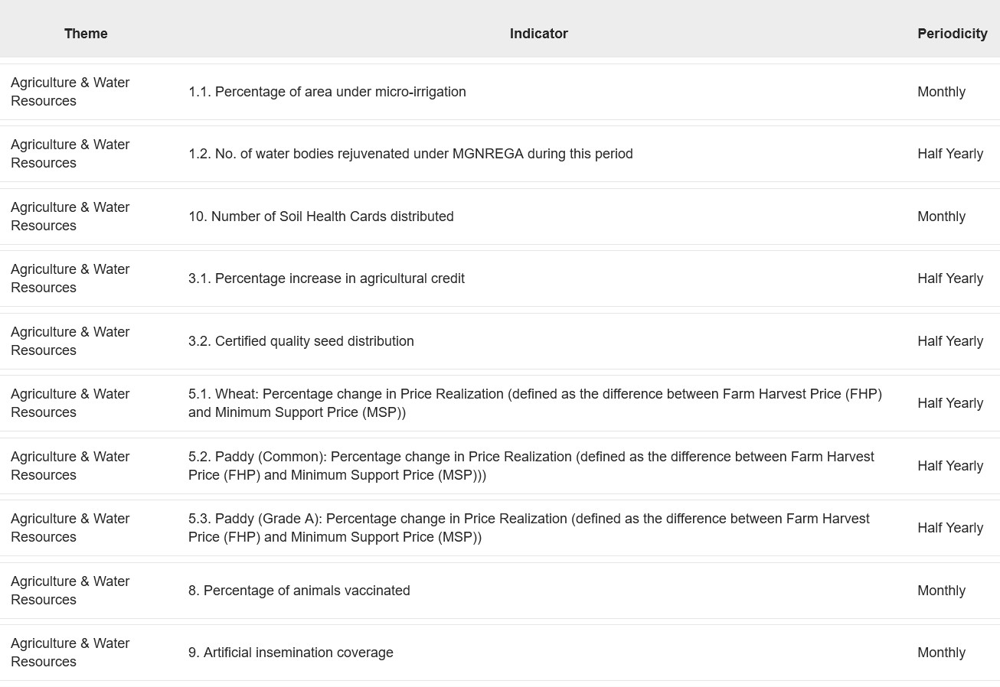

State dashboards perform their liveness, giving the impression of a stream of continually updated data, like the information displays at airports or the weather report. The impressive numbers of state projects are often rendered in a typeface that resembles the LCD numerals of digital clocks, as if the metrics of development are a measure of time. Every time a dashboard is loaded, numbers and charts spring up, suggesting that the data has arrived fresh from the world. Yet if we dig deeper, we find that some of these are last month's numbers, some are from six months ago, some even a year old. "Real time" is a flexible signifier.
State dashboards perform their liveness, giving the impression of a stream of continually updated data, like the information displays at airports or the weather report. The impressive numbers of state projects are often rendered in a typeface that resembles the LCD numerals of digital clocks, as if the metrics of development are a measure of time. Every time a dashboard is loaded, numbers and charts spring up, suggesting that the data has arrived fresh from the world. Yet "real time" is a flexible signifier. If we dig deeper, we find that some of these are last month's numbers, some are from six months ago, some even a year old. This is often still a high frequency of updates for a state so large and slow, but it's not quite as temporally intense as it appears.
The dashboard pulls together data from diverse sources into a single view. For tentacular organisations with hierarchical information flows, like the Indian state, the dashboard enables a centralisation that was never before possible.